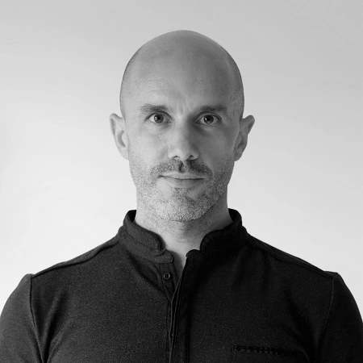

Ikerbasque Research Fellow
Department of Linguistics & Basque Studies
EHU &
Ikerbasque
| jonander.mendia@ehu.eus | ||
| (+34) 945 014 003 | ||
| Micaela Portilla Research Center | ||
| Justo Vélez de Elorriaga 1 | ||
| 01006 Vitoria-Gasteiz |